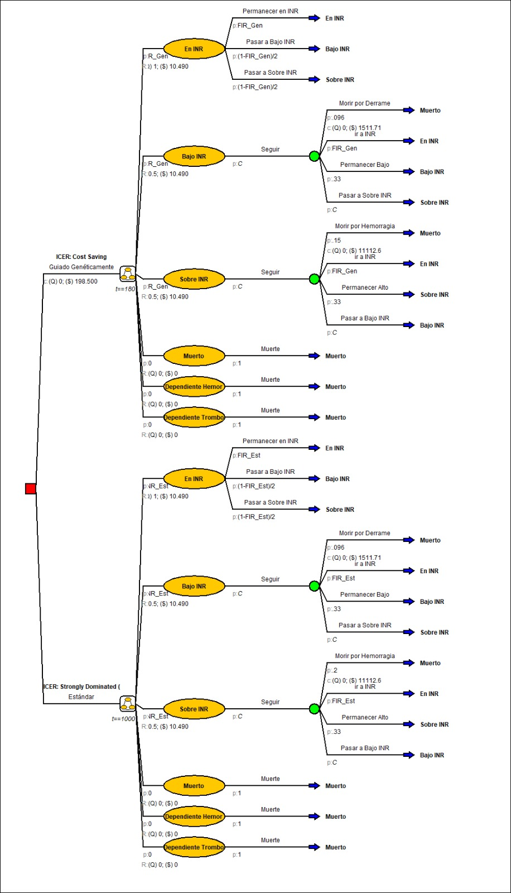

Costo-Efectividad de Terapias Farmacogenéticas usando Cadenas de Markov
Resumen de la Investigación
En este estudio se evalúa el costo-efectividad de implementar terapias farmacogenéticas en comparación con los esquemas terapéuticos tradicionales en el sistema de salud chileno.
La farmacogenética permite personalizar la dosificación y elección de medicamentos —específicamente anticoagulantes como el acenocumarol— según el perfil genético individual de cada paciente, maximizando la eficacia clínica y disminuyendo dramáticamente episodios hemorrágicos o tromboembólicos adversos.
Esta investigación forma parte del artículo científico:
“Cost-effectiveness of genotype-guided acenocoumarol therapy in atrial fibrillation: a pharmacogenomic simulation study in the chilean population” (2026).
Acceder a la publicación (DOI: 10.1038/s41397-026-00411-7)

Objetivos del Estudio
- Modelar la Progresión Clínica: Simular la evolución a lo largo del tiempo de pacientes con fibrilación auricular bajo esquemas de dosificación estándar versus guiados por genotipo.
- Evaluación Económica en Salud: Estimar la Razón de Costo-Efectividad Incremental (ICER) considerando costos directos de secuenciación genética, hospitalizaciones, tratamientos y años de vida ajustados por calidad (QALYs).
- Soporte a Políticas Públicas: Proveer evidencia cuantitativa rigurosa a tomadores de decisión sobre la rentabilidad de incorporar pruebas farmacogenéticas en las canastas de salud pública.
Metodología
- Modelos de Decisión de Markov: Se definieron estados de salud mutuamente excluyentes (mantenimiento en rango terapéutico, eventos de sangrado menor/mayor, ACV isquémico y muerte).
- Simulación y Software: Se utilizó software especializado en evaluación económica en salud (Amua) complementado con análisis estadísticos para evaluar matrices de transición probabilísticas y análisis de sensibilidad determinísticos y probabilísticos (Monte Carlo).
Impacto y Conclusiones
Los resultados demuestran que la inversión inicial en genotipificación se amortiza rápidamente gracias a la reducción sustancial de complicaciones graves y rehospitalizaciones, sustentando la viabilidad económica de la medicina de precisión en el contexto latinoamericano.